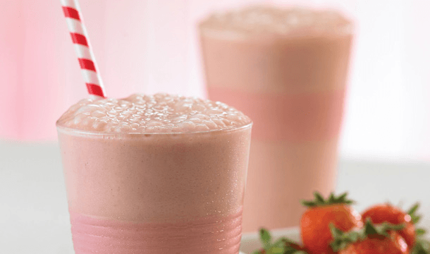

◖Coffrey◗
Chocomilk-fresa
Ingredientes:
2 tazas Leche
1 taza Fresa picadas
2 cucharadas Cocoa en polvo
2 cucharadas Azúcar
1/2 taza Hielo
Preparacion:
Licúa la leche con las fresas y la cocoa. Añade el azúcar y el hielo poco a poco..
Sirve y decora con fresas rebanadas.
